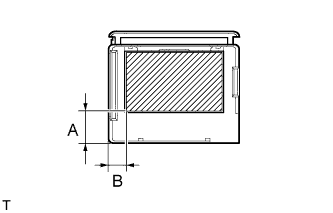
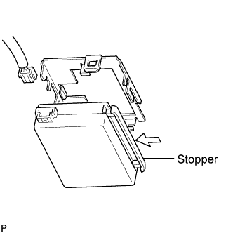
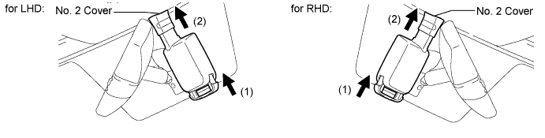

RAIN SENSOR > INSTALLATION |
| 1. INSTALL RAIN SENSOR TAPE |
 |
Apply new rain sensor tape to the rain sensor surface, indicated by the hatched area.
| Area | Measurement |
| A | 15 mm (0.591 in.) |
| B | 8 mm (0.315 in.) |
| 2. INSTALL RAIN SENSOR |
 |
Securely attach the rain sensor to the bracket.
Push in the stopper.
Connect the connector.
| 3. INSTALL RAIN SENSOR COVER |
Push in the stopper in the direction of the arrow labeled (1) to install the rain sensor cover.

Slide the No. 2 cover in the direction of the arrow labeled (2) to fix it in place.